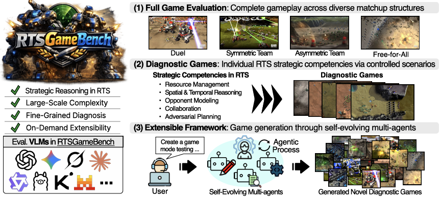
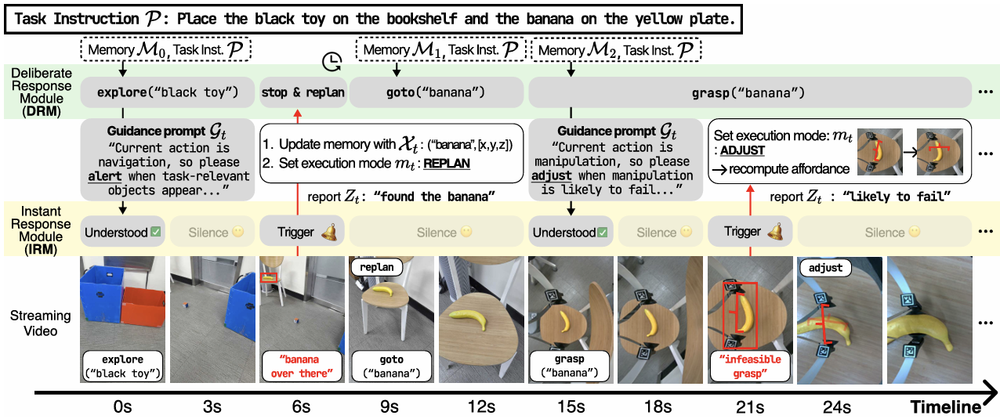
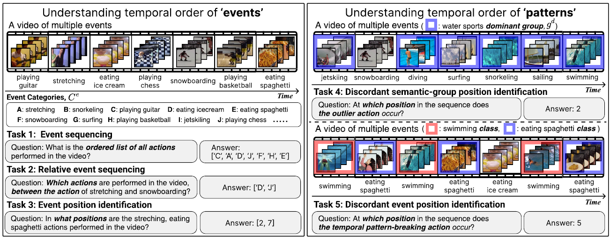

|
San Kim I am a second-year Master's student at the Graduate School of Artificial Intelligence at Seoul National University, advised by Prof. Jonghyun Choi. I received my B.S. degree in Computer Science from Yonsei University. CV / Email / Google Scholar / LinkedIn / Github |

|
| Publications |
|
 |
RTSGameBench: An RTS Benchmark for Strategic Reasoning by Vision-Language Models
San Kim*, Daechul Ahn*, Reokyoung Kim, Hyunbeom Choi, Seungyeon Jwa, Jonghyun Choi† (* equal contribution) On Review [project] |

|
Society of Mind Meets Real-Time Strategy: A Hierarchical Multi-Agent Framework for Strategic Reasoning
Daechul Ahn*, San Kim*, Jonghyun Choi† (* equal contribution) COLM 2025 [paper] [code] [project] |

|
ISR-DPO: Aligning Large Multimodal Models for Videos by Iterative Self-Retrospective DPO
Daechul Ahn*, Yura Choi*, San Kim, Youngjae Yu, Dongyeop Kang, Jonghyun Choi† AAAI 2025 [paper] [code] |
|
 |
BINDER: Instantly Adaptive Mobile Manipulation with Open-Vocabulary Commands
Seongwon Cho*, Daechul Ahn*, Donghyun Shin, Hyunbeom Choi, San Kim, Jonghyun Choi† ICRA 2026 [paper] |
|
 |
What Happens When: Learning Temporal Order of Events in Videos
Daechul Ahn*, Yura Choi*, Hyunbum Choi*, Seongwon Cho, San Kim, Jonghyun Choi† WACV 2026 [paper] |

|
Learning Equi-angular Representations for Online Continual Learning
Minhyuk Seo, HyunSeo Koh, Wonje Jeung, Minjae Lee, San Kim, Hankook Lee, ..., Jonghyun Choi† CVPR 2024 [paper] [code] |
| Awards |
-
2nd Place in Class-Incremental with Repetition (CIR) using Unlabeled Data - 5th CLVISION workshop @ CVPR 2024
| Fellowships |
-
(2024-2025) Living Stipend Scholarship, Anpungla Foundation
- ₩2,200,000 per semester
-
(Spring 2026) Scholarship for Outstanding Master’s Students in STEM, Korea Student Aid Foundation
- ₩2,500,000 per semester
-
(2026) AI Seoul Tech Research Support Program Master’s Scholarship, Seoul Future Talent Foundation
- ₩20,000,000 per year
|
|